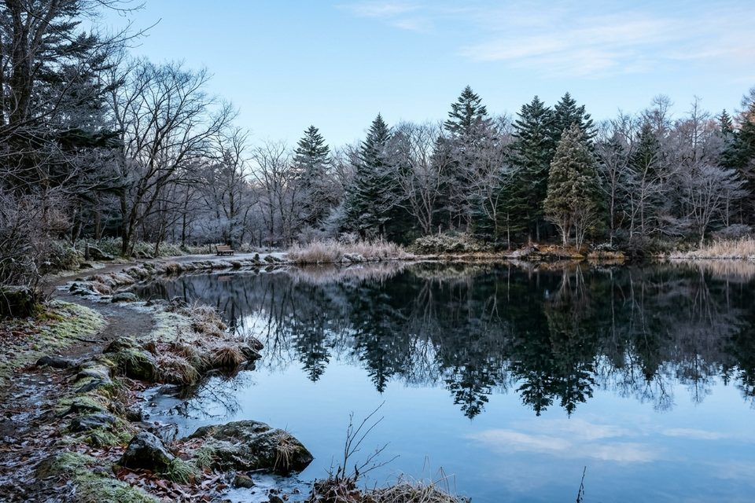

駅近くで本格パエリア（グラナダ軽井沢／ホセ・ルイス軽井沢）＆ 冬の雲場池・ツルヤコース
Authentic Spanish Paella Near Station, Winter Kumoba Pond & Tsuruya Stop
軽井沢駅近くのスペイン料理ランチを主役にしたプランです。※12月15日は「火曜日」にあたり、ご希望の「グラナダ軽井沢」は通常「火曜定休」のため、事前にお電話で特別営業の有無をご確認いただけるよう連絡先を掲載しつつ、同じ駅北口エリアで火曜日も確実に営業しているスペイン料理の名店「ホセ・ルイス軽井沢」もあわせて組み込んでいます。
Centered around Spanish paella near Karuizawa Station. Note: Dec 15 falls on a Tuesday, which is Granada Karuizawa's regular weekly closing day. Alongside Granada's contact details (in case of special December hours), we've paired Jose Luis Karuizawa—a renowned Madrid-born Spanish restaurant just 2 minutes away by car that is open every Tuesday!

-
10:12 – 10:20
軽井沢駅 北口ロータリーで合流
Meet at Karuizawa Station North Exit
高速バス到着（北口バスのりば）に合わせてマイカー組と合流。北口すぐ横の「軽井沢駅北口駐車場（町営）」は入庫から30分無料なので、バスが多少前後しても落ち着いて待ち合わせできます。
The highway bus arrives at the North Exit rotary. The adjacent Karuizawa Station North Exit Municipal Parking Lot is free for the first 30 minutes, making pick-up easy even if highway traffic shifts arrival slightly.
-
10:25 – 11:15
冬の「雲場池」散策（または旧軽井沢・聖パウロカトリック教会）
Morning Stroll at Kumoba Pond (or Old Karuizawa & St. Paul's Church)
駅から車で約5分。冬の静寂に包まれた「雲場池（スワンレイク）」は人が少なく、澄んだ空気と水鏡がとても美しい時間帯です（1周ゆっくり歩いて約25分）。寒さが強い日は、木造建築の名作「聖パウロカトリック教会」と旧軽井沢銀座の散策に切り替えるのもおすすめです。
A 5-minute drive from the station. Kumoba Pond ("Swan Lake") is wonderfully serene in December, with mirror-like reflections and crisp mountain air (~25 min loop). On colder mornings, you can swap this for nearby St. Paul's Catholic Church and Old Karuizawa Ginza Street.
-
11:30 – 13:00
ランチ：「グラナダ軽井沢」（※要営業確認）または「ホセ・ルイス軽井沢」（火曜営業）
Spanish Lunch: Granada Karuizawa (*Check Tue) or Jose Luis Karuizawa (Open Tue)
軽井沢駅北口徒歩2〜3分の隠れ家スペイン料理店「グラナダ軽井沢」は生米から炊くパエリアや熟成生ハムが評判の名店です。ただし12/15(火)は通常の火曜定休日にあたるため、休業の場合は同じ北口エリア（車2分・徒歩7分）にあり火曜日も無休営業しているマドリード発祥の名店「ホセ・ルイス軽井沢」で絶品パエリアや名物スパニッシュオムレツを楽しめます！
Granada Karuizawa (2–3 min walk from North Exit) is beloved for scratch-made paella and Jamón Serrano, though Tuesdays (Dec 15) are its regular closed day. If closed, Jose Luis Karuizawa—a storied Madrid restaurant just a 2-minute drive from the North Exit—is open every Tuesday for rich seafood paella/fideuà and signature Spanish tortilla!
⚠️ 12/15(火) ランチ店舗の重要チェックポイント
⚠️ Important Tuesday (Dec 15) Restaurant Notes
- ① ご希望店「グラナダ軽井沢」：通常火曜定休（祝日のみ営業）。12月の特別営業がないか念のため事前に電話確認（0267-42-7420）がおすすめです。※営業時はパエリア炊き上がりに30〜40分・無料P2台・現金払いのみ。
- ② 火曜営業の駅近代替店「ホセ・ルイス軽井沢」：定休日なし（12/15火曜もランチ11:30〜14:30営業）。ホテル「TWIN-LINE HOTEL」1階（外来ランチ大歓迎・カード可・徒歩3分の第2駐車場に25〜30台あり）。Web・電話予約が可能です。
- 1) Granada Karuizawa: Normally closed on Tuesdays (except national holidays). Call ahead (0267-42-7420) just in case of special December hours. (*If open: paella takes 30–40m, 2 free parking spots, Cash Only.)
- 2) Tuesday-Open Alternative — Jose Luis Karuizawa: Open daily including Tue, Dec 15 (Lunch 11:30–14:30, L.O. 13:30) on 1F of TWIN-LINE HOTEL (walk-in/non-staying guests welcome, credit cards accepted, 25–30 parking spaces at Lot #2).
-
13:15 – 13:45
西へ移動しがてら「ツルヤ軽井沢店」または「丸山珈琲 軽井沢本店」
Stop at TSURUYA Karuizawa Supermarket or Maruyama Coffee Main Shop
上山田温泉方面（中軽井沢・西側）へ車を進めながら、12月は無休営業の大人気ご当地スーパー「ツルヤ軽井沢店」へ（無料駐車場486台）。今夜ホテルで6人全員で乾杯する信州ワイン・地ビール・りんごバターなどのお土産調達に最適です（店内ミカド珈琲のモカソフトも名物！）。カフェ派なら近くの「丸山珈琲 軽井沢本店」もおすすめ。
Heading west toward the expressway, stop by TSURUYA Karuizawa—a beloved local gourmet supermarket open daily in December (486 free parking spaces). Pick up Shinshu wines, craft beers, and apple butter to enjoy with all 6 family members at the hotel tonight, or visit nearby Maruyama Coffee Main Shop.
-
13:50 – 15:00
中軽井沢を出発 → 「クラブウィンダム 千曲館 長野」へチェックイン（6名合流）
Depart Naka-Karuizawa → Check in at Club Wyndham Chikumakan Nagano
浅間サンライン経由で上信越自動車道「小諸IC」→「坂城IC」へ（約60〜65分）。15:00頃に戸倉上山田温泉「クラブウィンダム 千曲館 長野」へ到着し、ご家族2名とも合流！
Take Asama Sunline west to Komoro IC on the Joshin-etsu Expressway, exit at Sakaki IC, and arrive at Club Wyndham Chikumakan Nagano in ~60–65 minutes for your 15:00 family reunion.